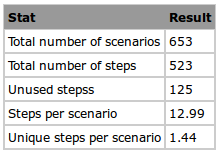
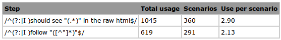
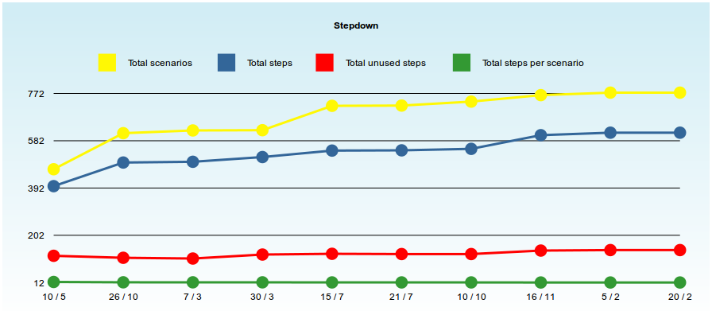

Overview
The aim of Stepdown is to provide visability to highly used steps within you Cucumber feature files.
Statistics available
- Total number of scenarios
- Total number of steps
- Number of empty scenarios (scenarios without any steps)
- Number of steps per scenario
- Number of unique steps per scenario
-
Per step
- Total usage
- Number of scenarios
- Usage per scenario
- Scenario grouping (number of times used with another step)
Installation
Stepdown is available as a Ruby gem
gem install stepdown
Or, add the following to your Gemfile
gem 'stepdown'
Usage
From the root folder of your project. This assumes step definitions are in PROJECT_ROOT/features/step_definitions and feature files are in PROJECT_ROOT/features
stepdown
Or, set the the directory parameters manually
stepdown --steps <step definition directory> --features <feature file directory>
e.g. stepdown --steps features/step_definitions --features features
e.g. stepdown --steps features/step_definitions --features features
Sample output
Overview

Step usages

Graph output
